Chapter 5 Análisis bivariado
5.1 Boxplot: Sales por categoría
df %>%
ggplot(aes(x = Category, y = Sales)) +
geom_boxplot(fill = "steelblue", alpha = 0.7, color = "black") +
stat_summary(fun = mean, geom = "point", shape = 20, size = 4, color = "red") +
labs(x = "Categoría", y = "Ventas", title = "Distribución de ventas por categoría") +
theme_bw()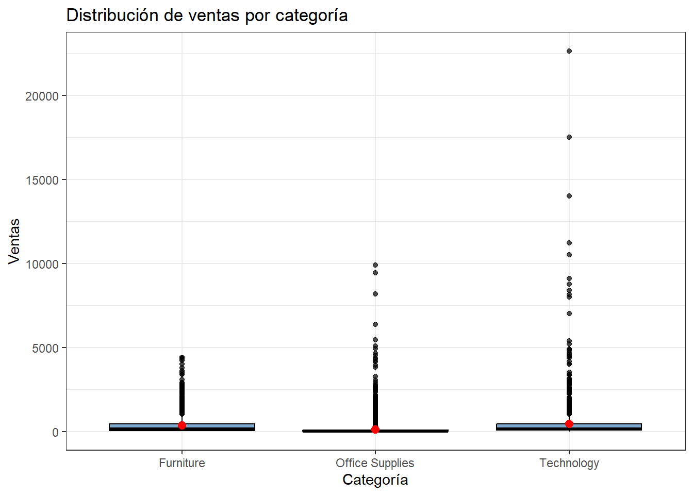
Technology muestra el rango de ventas más alto, con ventas que llegan hasta cerca de $10000. Office Supplies tiene un rango menor pero con mayor concentración de pedidos alrededor de $5000. Furniture es la categoría con menor dispersión y menores valores de venta entre las tres.
5.2 Boxplot: log(Sales) por categoría
df %>%
ggplot(mapping = aes(x = Category, y = log(Sales))) +
geom_boxplot(fill = "steelblue", alpha = 0.7, color = "black") +
stat_summary(fun = mean, geom = "point", shape = 20, size = 4, color = "red") +
labs(x = "Categoría", y = "Log(Ventas)") +
theme_bw()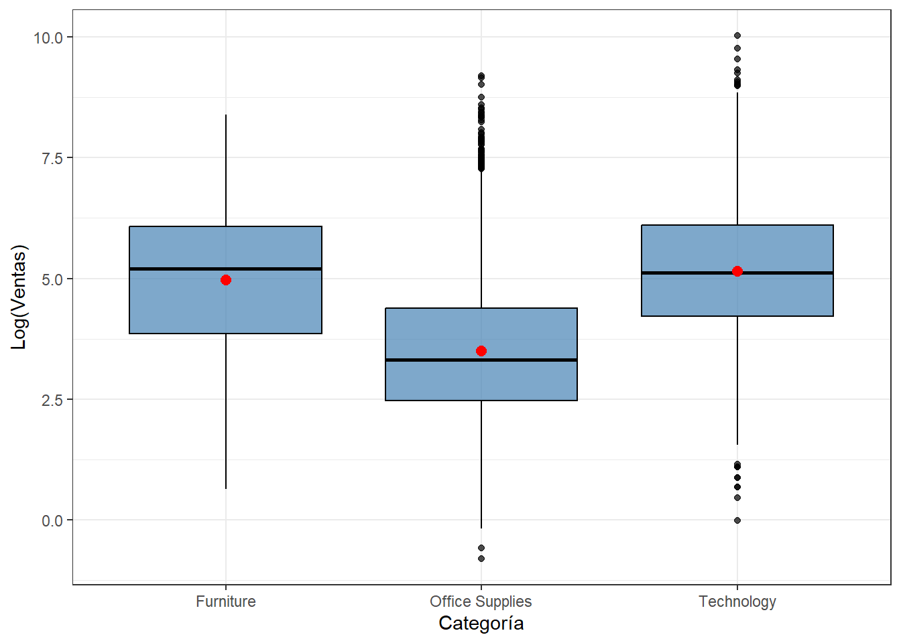
- Furniture (5.205) con la mediana mas alta junto con Technology (5.113). Office Supplies queda muy por debajo (3.311), casi 2 puntos log menos que las otras dos.
- Technology (1.886), seguida muy de cerca por Office Supplies (1.916). Furniture es la que tiene la caja más ancha/dispersa (2.224).
5.3 Boxplot: Sales por región
df %>%
ggplot(aes(x = Region, y = Sales)) +
geom_boxplot(fill = "steelblue", alpha = 0.7) +
stat_summary(fun = mean, geom = "point", shape = 20, size = 4, color = "red") +
labs(x = "Región", y = "Ventas", title = "Distribución de ventas por región") +
theme_bw()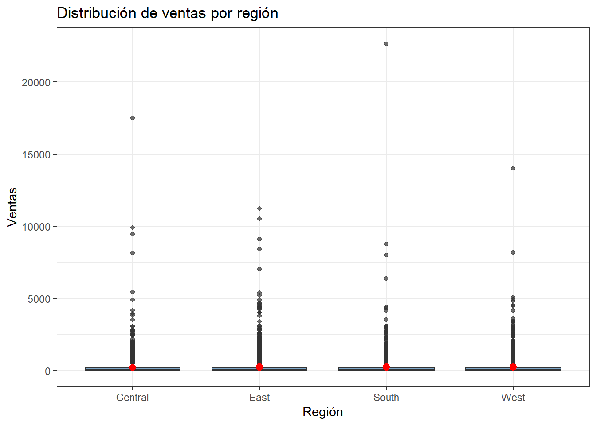
East y Central muestran los rangos de venta más altos (hasta ~5000 y ~4400
respectivamente), y South se mantiene en niveles similares. A diferencia de
Category, las diferencias entre regiones son menos marcadas.
5.4 Boxplot: Sales por segmento
df %>%
ggplot(aes(x = Segment, y = Sales)) +
geom_boxplot(fill = "steelblue", alpha = 0.7) +
stat_summary(fun = mean, geom = "point", shape = 20, size = 4, color = "red") +
labs(x = "Segmento", y = "Ventas", title = "Distribución de ventas por Segmento") +
theme_bw()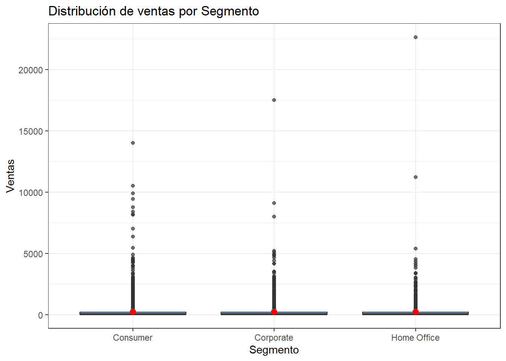
## # A tibble: 3 × 4
## Segment mediana media n
## <chr> <dbl> <dbl> <int>
## 1 Consumer 53.7 224. 5191
## 2 Corporate 56.5 234. 3020
## 3 Home Office 52.4 241. 1783Medianas: Consumer 53.72, Corporate 56.54, Home Office 52.44, ningun segmento sobresale.
Medias: Consumer 223.73, Corporate 233.82, Home Office 240.9, aquí Home Office tiene la media más alta.
Consumer tiene 5191 pedidos, casi el triple que Home Office (1783). Consumer genera más ventas totales por tener más pedidos.
df %>%
ggplot(aes(x = Category, y = Region)) +
geom_count(aes(color = Category), show.legend = TRUE) +
labs(x = "Categoría", y = "Región", color = "Categoría", size = "Frecuencia",
title = "Pedidos por categoría y región") +
theme_bw()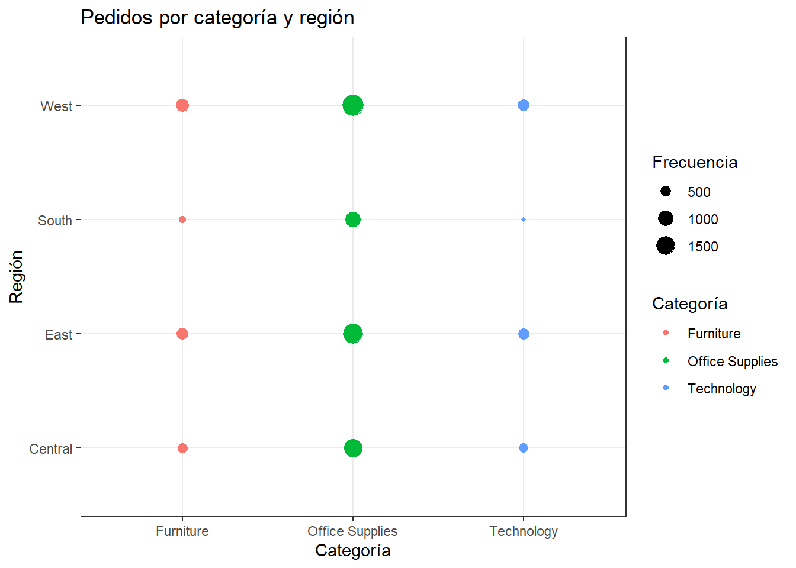
Office Supplies tiene los círculos más grandes (mayor frecuencia de pedidos, ~1000) especialmente en West y East. Furniture tiene círculos intermedios (~500) en West y Central. Technology presenta los círculos más pequeños en todas las regiones, coherente con ser la categoría de menor volumen de pedidos.
5.5 Bins 2D: Discount vs. Sales
df %>%
ggplot(aes(x = Discount, y = Sales)) +
geom_bin2d(bins = 40) +
scale_fill_viridis_c(option = "plasma", name = "Frecuencia") +
labs(x = "Descuento", y = "Ventas", title = "Distribución conjunta de descuento y ventas") +
theme_bw()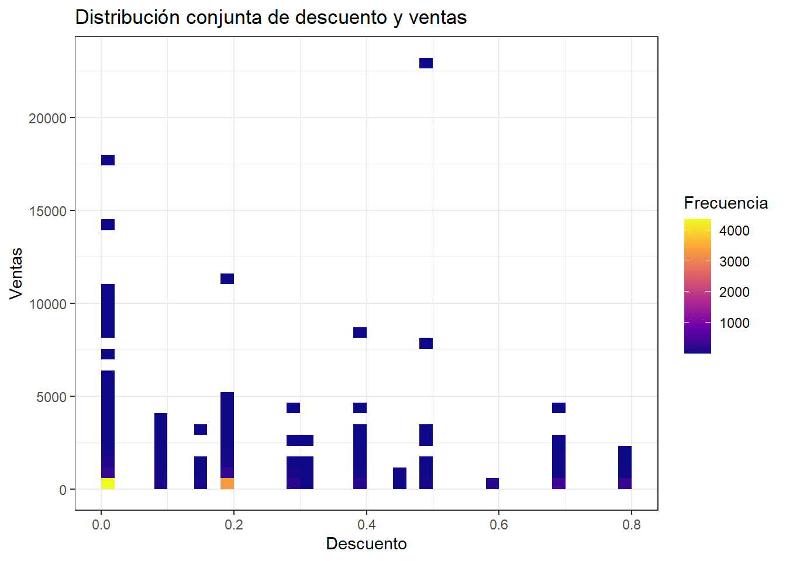
La mayoría de los pedidos se concentra en descuentos bajos (0.0-0.2), y las celdas con montos de venta más altos aparecen dispersas en varios niveles de descuento.5.6 Correlación entre variables continuas
library(corrplot)
num_vars <- df %>% select(Sales, Quantity, Discount, Profit)
matriz_cor <- cor(num_vars, use = "complete.obs")
print(matriz_cor)## Sales Quantity Discount Profit
## Sales 1.00000000 0.20079477 -0.02819012 0.47906435
## Quantity 0.20079477 1.00000000 0.00862297 0.06625319
## Discount -0.02819012 0.00862297 1.00000000 -0.21948746
## Profit 0.47906435 0.06625319 -0.21948746 1.00000000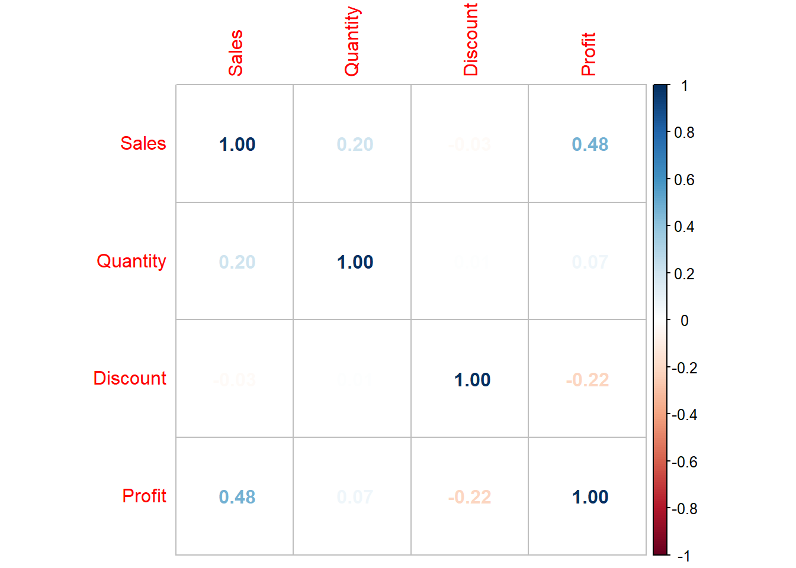
Sales y Profit tienen la correlación más alta del grupo (0.48, positiva moderada): a mayor venta, mayor ganancia, como es esperable. Sales y Quantity tienen una correlación débil (0.20). Sales y Discount tienen una correlación prácticamente nula (-0.03) en términos lineales, lo que contrasta con el patrón que sí se ve en el bins2D: la relación entre descuento y ventas no es lineal, por eso la correlación (que solo mide relación lineal) casi no la detecta.
5.7 Ventas en el tiempo
tendencia_mensual <- df %>%
mutate(anio_mes = lubridate::floor_date(Order_Date, "month")) %>%
group_by(anio_mes) %>%
summarise(ventas = sum(Sales), .groups = "drop")
tendencia_mensual %>%
ggplot(aes(x = anio_mes, y = ventas)) +
geom_point(color = "darkred", size = 2) +
labs(title = "Evolución mensual de ventas", x = "Mes", y = "Ventas") +
theme_bw()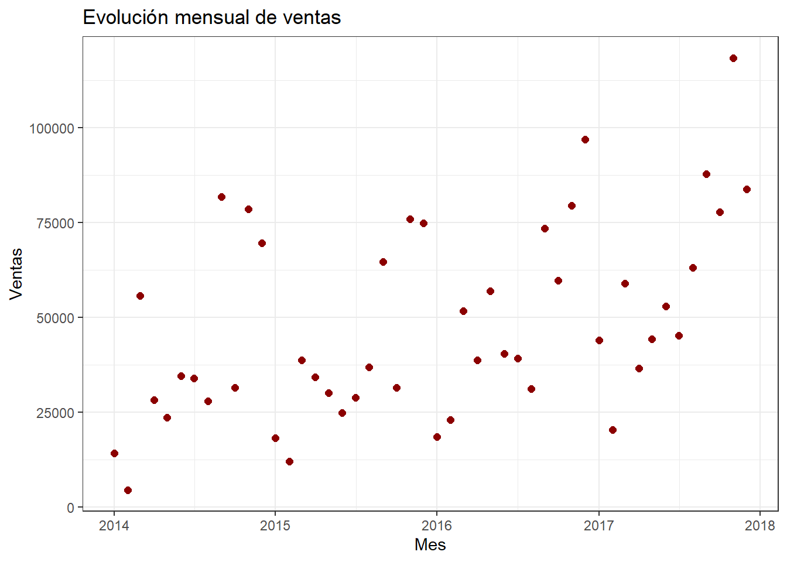
Los puntos se mantienen relativamente parejos mes a mes, sin un mes que se dispare notablemente por encima de los demás — no hay un pico estacional extremo visible a simple vista en la dispersión cruda.
tendencia_mensual %>%
ggplot(aes(x = anio_mes, y = ventas)) +
geom_point(color = "steelblue", size = 2, alpha = 0.7) +
geom_smooth(method = "loess", se = TRUE, color = "darkorange") +
labs(title = "Tendencia de ventas en el tiempo", x = "Mes", y = "Ventas") +
theme_bw()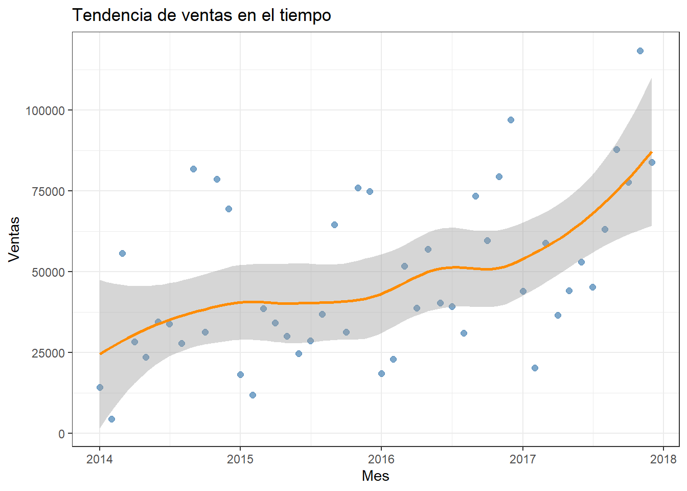
Usamos la curva loess para visualizar la tendencia general. La línea de tendencia muestra una forma ondulada a lo largo del tiempo, con una leve subida hacia 2017, lo que sugiere un crecimiento moderado de las ventas totales hacia el final del periodo, más que una tendencia lineal constante.
tendencia_categoria <- df %>%
mutate(anio_mes = lubridate::floor_date(Order_Date, "month")) %>%
group_by(Category, anio_mes) %>%
summarise(ventas = sum(Sales), .groups = "drop")
tendencia_categoria %>%
ggplot(aes(x = anio_mes, y = ventas, colour = Category)) +
geom_point(aes(colour = Category)) +
stat_smooth(method = "loess", se = FALSE) +
labs(title = "Tendencia de ventas por categoría", x = "Mes", y = "Ventas", color = "Categoría") +
theme_bw() +
theme(legend.position = "bottom")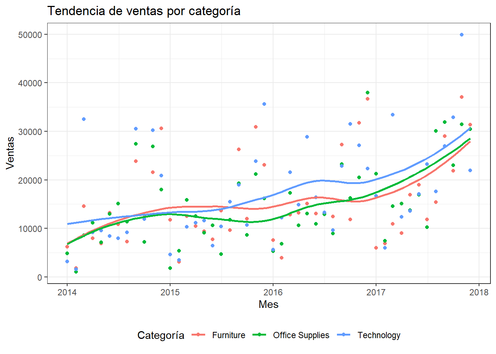
Technology es la categoría que muestra mayor crecimiento en el tiempo respecto a Furniture y Office Supplies, que se mantienen más estables. Esto es coherente con lo visto antes: Technology tiene menos pedidos pero de mayor valor, y ese valor por pedido parece ir en aumento.
ultimo_mes <- tendencia_categoria %>% filter(anio_mes == max(anio_mes))
tendencia_categoria %>%
ggplot(aes(x = anio_mes, y = ventas, colour = Category)) +
geom_line() +
geom_text(
data = ultimo_mes,
aes(label = Category, color = Category),
size = 3, check_overlap = TRUE, nudge_x = 10
) +
labs(title = "Tendencia de ventas por categoría", x = "Mes", y = "Ventas", color = "Categoría") +
theme_bw() +
theme(legend.position = "none")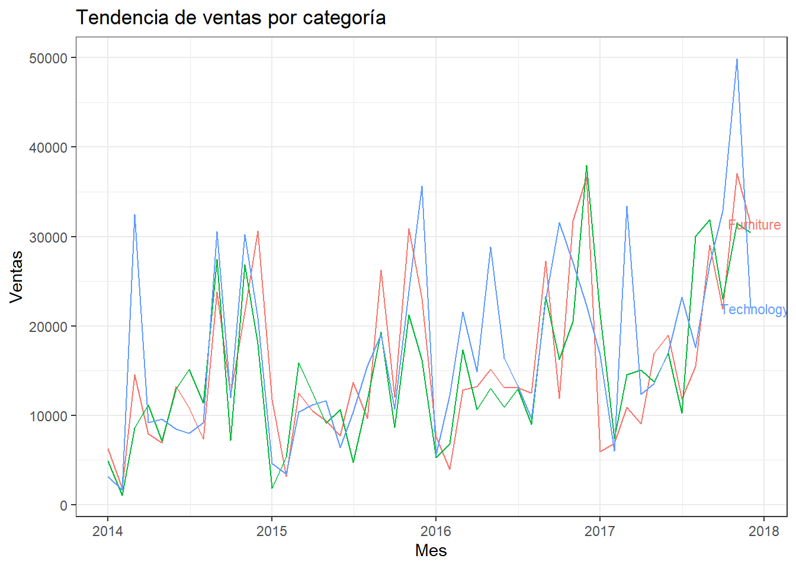
Las etiquetas de texto se encimen un poco al final de las líneas (se podría
aumentar nudge_x para separarlas mejor), pero se alcanza a distinguir que
Technology presenta picos donde sobresale claramente por encima de las otras dos
categorías, reforzando que es la que más impulsa el crecimiento.
tendencia_Region <- df %>%
mutate(anio_mes = lubridate::floor_date(Order_Date, "month")) %>%
group_by(Region, anio_mes) %>%
summarise(ventas = sum(Sales), .groups = "drop")
tendencia_Region %>%
ggplot(aes(x = anio_mes, y = ventas)) +
geom_point() +
geom_smooth(method = "loess", se = FALSE, color = "darkorange") +
labs(title = "Tendencia de ventas por región", x = "Mes", y = "Ventas") +
theme_bw() +
facet_wrap(~ Region)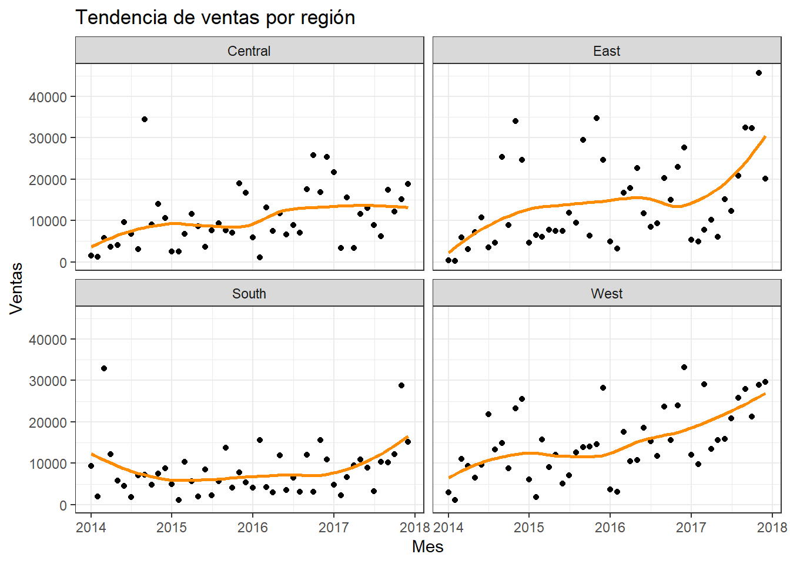
West se tiene mayor estabilidad y niveles de venta ligeramente más altos en compareción de las demás a lo largo del tiempo.